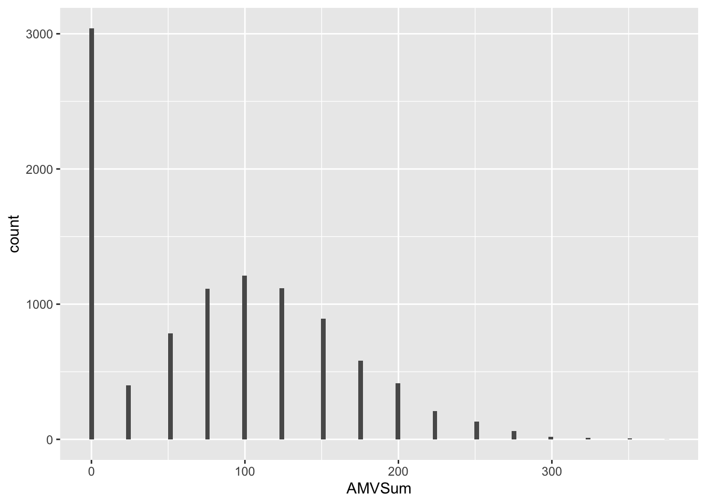
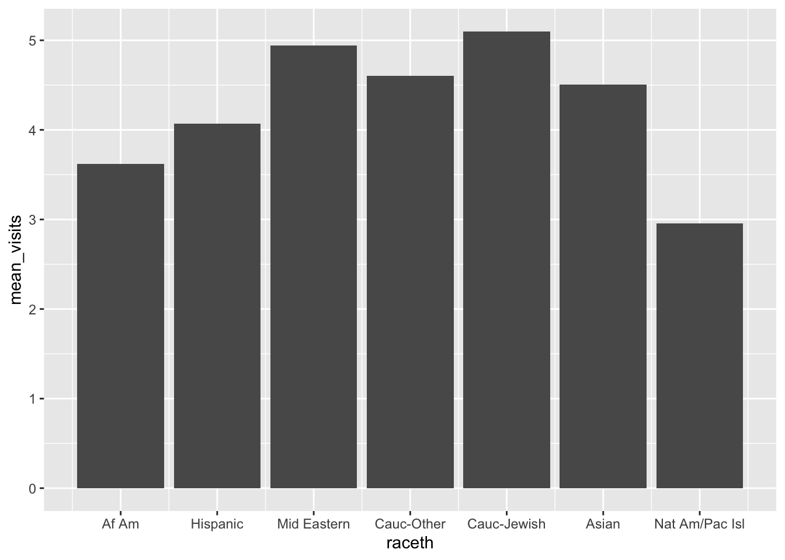
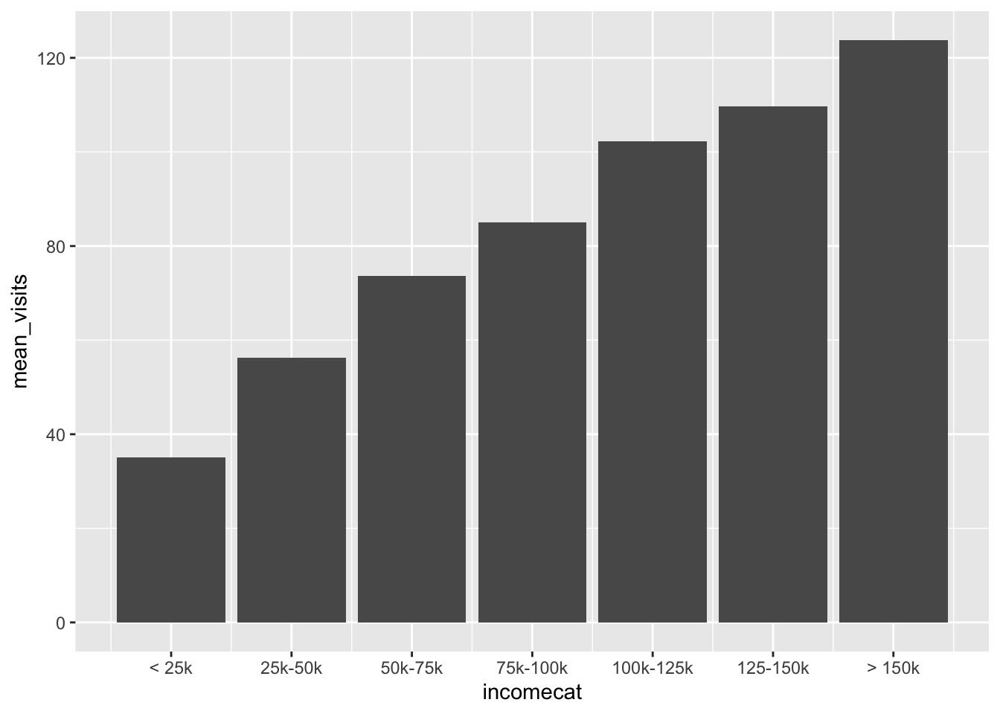
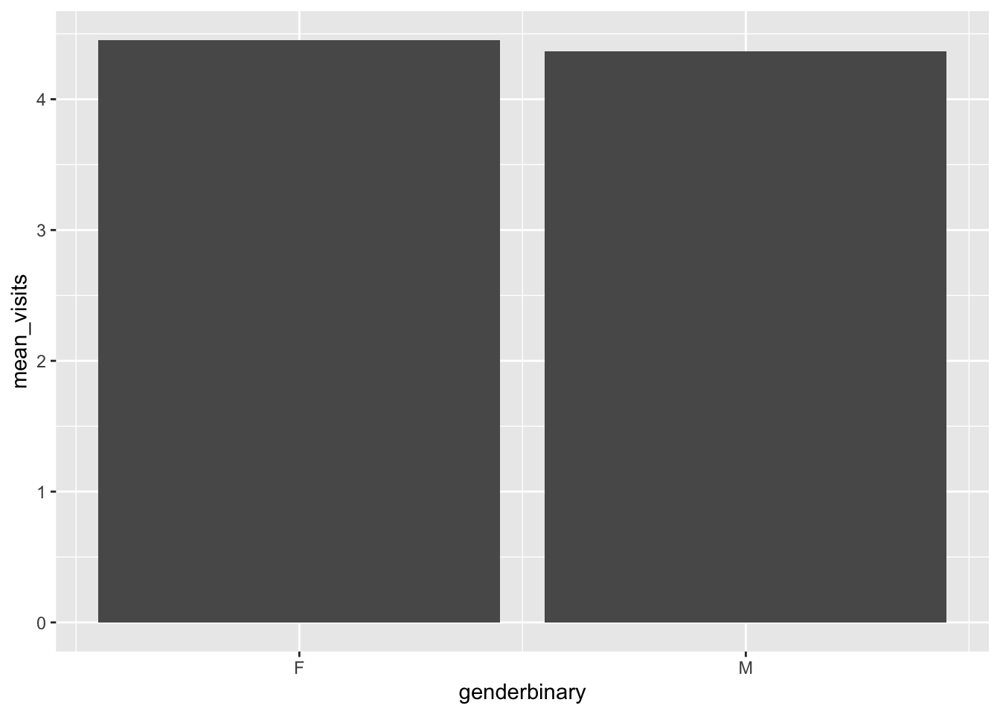
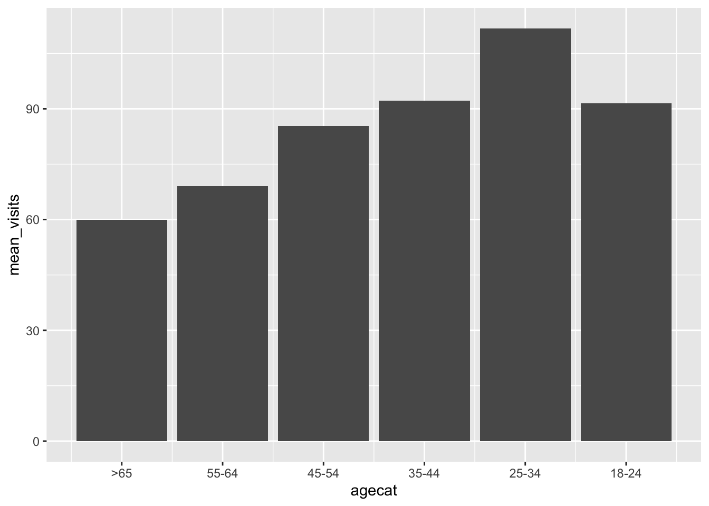

library(ggplot2)
library(dplyr)
Attaching package: 'dplyr'The following objects are masked from 'package:stats':
filter, lagThe following objects are masked from 'package:base':
intersect, setdiff, setequal, unionlibrary(pscl)Classes and Methods for R developed in the
Political Science Computational Laboratory
Department of Political Science
Stanford University
Simon Jackman
hurdle and zeroinfl functions by Achim Zeileislibrary(MASS)
Attaching package: 'MASS'The following object is masked from 'package:dplyr':
selectlibrary(performance)
data <- read.csv("sim_data.csv")
# Mental health visits
data |> ggplot(aes(x = AMVSum)) +
geom_histogram(bins=round(max(data$AMVSum)/3))
# # By race
data |> group_by(raceth) |>
summarize(mean_visits = mean(AMVSum)) |>
ggplot(aes(x = raceth, y = mean_visits)) +
geom_bar(stat = "identity") +
scale_x_continuous(breaks = c(1,2,3,4,5,6,7), labels = c("Af Am", "Hispanic", "Mid Eastern", "Cauc-Other", "Cauc-Jewish", "Asian", "Nat Am/Pac Isl")) 
# By income
data |> group_by(incomecat) |>
summarize(mean_visits = mean(AMVSum)) |>
ggplot(aes(x = incomecat, y = mean_visits)) +
geom_bar(stat = "identity") +
scale_x_continuous(breaks = c(1,2,3,4,5,6,7), labels = c("< 25k", "25k-50k", "50k-75k", "75k-100k", "100k-125k", "125-150k", "> 150k"))
# By gender
data |> group_by(genderbinary) |>
summarize(mean_visits = mean(AMVSum)) |>
ggplot(aes(x = genderbinary, y = mean_visits)) +
geom_bar(stat = "identity") +
scale_x_continuous(breaks = c(0,1), labels = c("F", "M"))
# By age
data |> group_by(agecat) |>
summarize(mean_visits = mean(AMVSum)) |>
ggplot(aes(x = agecat, y = mean_visits)) +
geom_bar(stat = "identity") +
scale_x_continuous(breaks = c(1,2,3,4,5,6), labels = c(">65", "55-64", "45-54", "35-44", "25-34", "18-24"))
# Model example
model1 <- glm(AMVSum ~ factor(genderbinary), family= poisson(link = "log"), data=data)
summary(model1)
Call:
glm(formula = AMVSum ~ factor(genderbinary), family = poisson(link = "log"),
data = data)
Coefficients:
Estimate Std. Error z value Pr(>|z|)
(Intercept) 4.457162 0.001380 3230.99 <2e-16 ***
factor(genderbinary)1 -0.128222 0.002297 -55.82 <2e-16 ***
---
Signif. codes: 0 '***' 0.001 '**' 0.01 '*' 0.05 '.' 0.1 ' ' 1
(Dispersion parameter for poisson family taken to be 1)
Null deviance: 792377 on 9999 degrees of freedom
Residual deviance: 789226 on 9998 degrees of freedom
AIC: 834285
Number of Fisher Scoring iterations: 5performance::check_overdispersion(model1)# Overdispersion test
dispersion ratio = 63.701
Pearson's Chi-Squared = 636885.850
p-value = < 0.001Overdispersion detected.performance::check_zeroinflation(model1)# Check for zero-inflation
Observed zeros: 3041
Predicted zeros: 0
Ratio: 0.00Model is underfitting zeros (probable zero-inflation).exp(model1$coefficients) (Intercept) factor(genderbinary)1
86.2424093 0.8796581